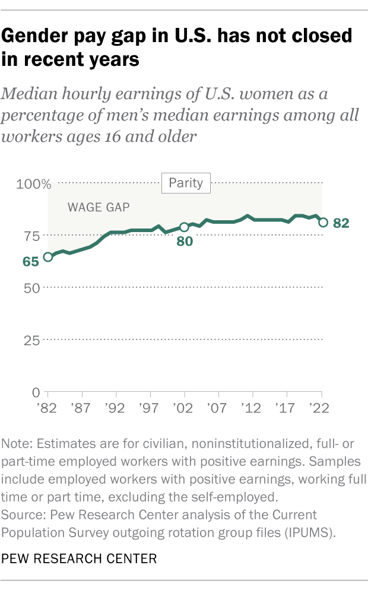
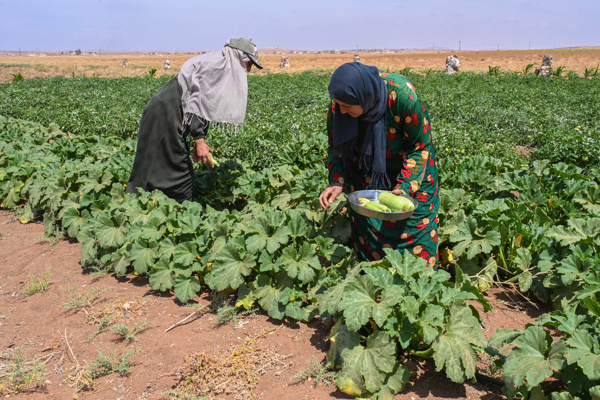
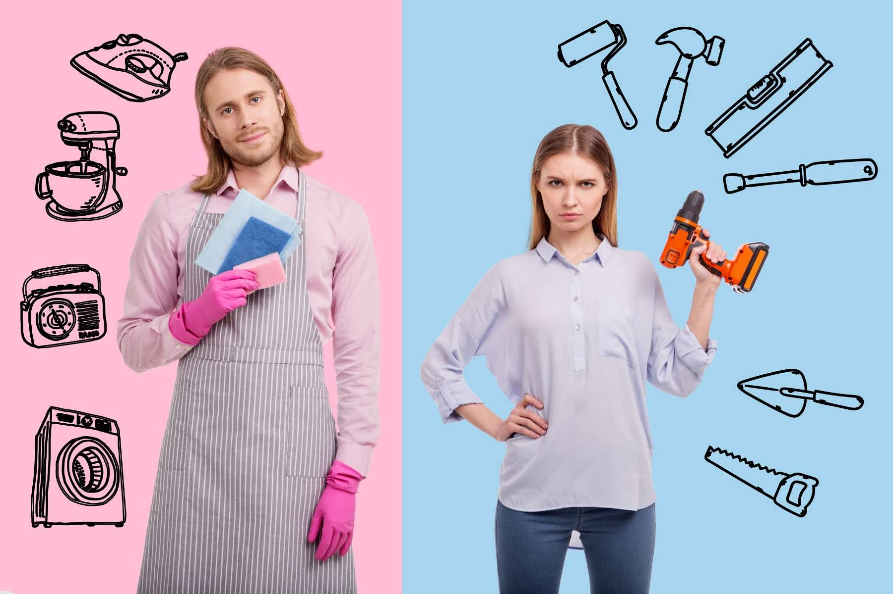

The Inequalities That Exist
Current Inequalities
Just in the United States, there are many examples of gender inequality. Growth of the percentage of women who
make up the workforce has stagnated. There is a gender pay gap in the US for the same job. There are very few women in high leadership positions or in political office.
According to Pew Research, the gender pay gap, while it has been going closer and closer to 100% pay parity, has not closed and is beginning to plateau, indicating that
pay parity percentages may not continue to increase between men and women.

How this affects you
Not just in the United States, but around the world, gender inequality has profound effects for females. They are denied access to education like their male friends.
They are denied access to healthcare that is as good as the healthcare provided to males. Women across the world are regularly deprived of basic rights, forced to marry, often before the age of 18,
and subjected to violence.
Child labor also results from gender inequality and women end up working in places that employ child labor in order to help make ends meet instead of getting an education.

Causes
Gender discrimination starts early on. The expectations of what a child needs to do varies based on their gender and as such, the access to resources is also heavily in favor of males in the family.
Women are given heavy household responsibilities that often result in them discontinuing their education and increasing the chances of child marriage and early pregnancy.

Developed by Vasista Ramachandruni for Ms. Hutchison!